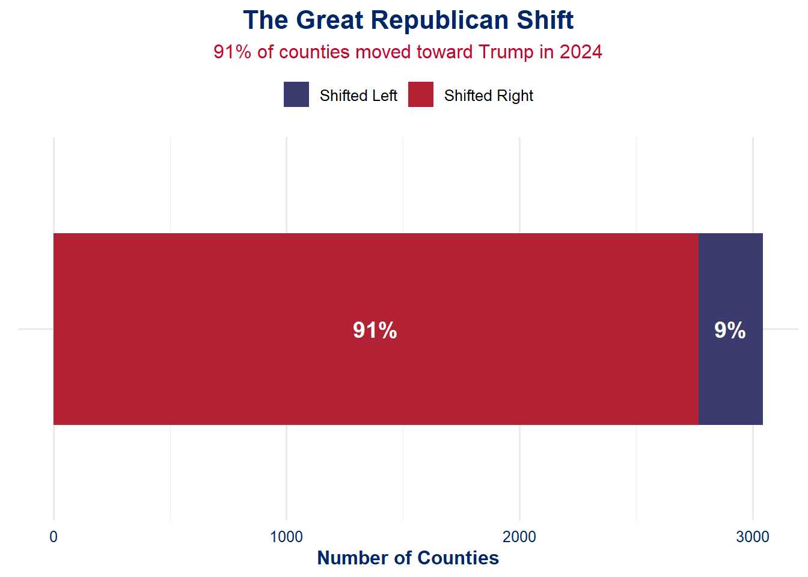

MP04: County-Level U.S. Election Analysis (2020 vs 2024)
Author
Dhruv Sharma
The Great American Realignment
A County-Level Breakdown of the 2024 Political Shift 🇺🇸📉📈
Welcome to our data-driven deep dive into what may be the most seismic political shift of the decade.
The 2024 presidential election didn’t just redraw the map — it rewrote the playbook. Using detailed county-level results from 2020 and 2024, this report traces the unexpected turns in America’s political landscape:
🟥 Red counties got redder — and they weren’t always rural.
🟦 Blue strongholds wobbled, especially in places no one expected.
📉 Some states swung hard, while others held the line.
We processed thousands of county results, ran rigorous statistical tests, and visualized every twist in this electoral drama. Whether you’re here to celebrate the momentum or challenge the narrative — the charts don’t lie.
Let’s unpack the data behind the divide.
🨠Styling Setup for U.S. Flag Theme and loading all the required libraries
This chunk defines the custom U.S. flag-inspired themes for all ggplot2 visualizations and kableExtra tables across the project.
Code
# Install and load required packagesrequired_packages <-c("tidyverse", "sf", "rvest", "httr2", "janitor", "lubridate", "kableExtra", "ggplot2", "infer", "scales", "tigris", "gganimate")for (pkg in required_packages) {if (!require(pkg, character.only =TRUE)) {install.packages(pkg)library(pkg, character.only =TRUE) }}# Set optionsoptions(scipen =999, digits =3)theme_set(theme_minimal())# 🨠Define US Flag Theme for ggplottheme_us_flag <-function() {theme_minimal(base_size =12) +theme(panel.background =element_rect(fill ="#FFFFFF", color =NA),plot.background =element_rect(fill ="#FFFFFF", color =NA),plot.title =element_text(face ="bold", size =16, hjust =0.5, color ="#002868"),plot.subtitle =element_text(size =12, hjust =0.5, color ="#BF0A30"),axis.title =element_text(color ="#002868", face ="bold"),axis.text =element_text(color ="#002868"),legend.position ="top",legend.title =element_blank(),strip.text =element_text(face ="bold", color ="#BF0A30") )}# 🇺🇸 Define US-themed table styleus_table_style <-function(df, caption =NULL) { df %>%kbl(caption = caption, align ="c", escape =FALSE) %>%kable_styling(bootstrap_options =c("striped", "hover", "condensed", "responsive"), full_width =FALSE, font_size =13) %>%row_spec(0, bold =TRUE, color ="white", background ="#002868") %>%column_spec(1, bold =TRUE, color ="black") %>%scroll_box(width ="100%")}# 🔢 Percent formatter helperformat_percent <-function(x, digits =1) {paste0(formatC(100* x, format ="f", digits = digits), "%")}
🗺️ Task 1: Getting the Map Right
Before we can paint a picture of America’s political realignment, we need the canvas: a shapefile of U.S. counties. We’ll use the U.S. Census Bureau’s TIGER/Line shapefiles for 2024. To ensure flexibility, our code automatically falls back to lower-resolution files if the most detailed version fails.
This step sets up our geographic base for all future mapping, statistical overlays, and visual storytelling.
Code
# 📠Create Local Data Directorydata_dir <-"data/mp04"if (!dir.exists(data_dir)) {dir.create(data_dir, recursive =TRUE)message("✅ Created data directory: ", data_dir)} else {message("📂 Using existing data directory: ", data_dir)}# 🌠Set Up TIGER/Line Shapefile URL Basebase_url <-"https://www2.census.gov/geo/tiger/GENZ2024/shp/"resolutions <-c("500k", "5m", "20m") # Ordered by detail: High → Lowresolution_index <-1# Start with most detailed# ⬇️ Attempt to Download County Shapefilesuccess <-FALSEwhile (!success && resolution_index <=length(resolutions)) { current_resolution <- resolutions[resolution_index] filename <-paste0("cb_2024_us_county_", current_resolution, ".zip") local_file <-file.path(data_dir, filename) url <-paste0(base_url, filename)if (file.exists(local_file)) {message("📦 Shapefile already exists locally: ", local_file) success <-TRUE } else {message("🌠Attempting download: ", url) download_result <-tryCatch({download.file(url, local_file, mode ="wb")TRUE }, error =function(e) {message("⌠Download failed: ", e$message)FALSE })if (download_result) {message("✅ Download complete: ", local_file)unzip(local_file, exdir =file.path(data_dir, paste0("county_", current_resolution)))message("🗂️ Extracted to: ", file.path(data_dir, paste0("county_", current_resolution))) success <-TRUE } else { resolution_index <- resolution_index +1if (resolution_index <=length(resolutions)) {message("🔄 Trying lower resolution: ", resolutions[resolution_index]) } else {message("🚫 All resolutions failed to download.") } } }}
The drama of election night? We scraped it. Using rvest and httr2, we pulled county-level 2024 presidential results directly from Wikipedia for all 50 U.S. states.
We tackled inconsistent tables, ambiguous headers, and wild formats to standardize everything into a clean dataset of votes and percentages for Trump, Harris, and Others.
Code
# Function to fetch election data from Wikipediaget_election_results <-function(state) {# Special case for Alaskaif(state =="Alaska") { url <-"https://en.wikipedia.org/wiki/2024_United_States_presidential_election_in_Alaska" } else {# Format state name for URL state_formatted <-str_replace_all(state, "\\s", "_") url <-paste0("https://en.wikipedia.org/wiki/2024_United_States_presidential_election_in_", state_formatted) }# Create directory for storing data dir_name <-file.path("data", "election2024") file_name <-file.path(dir_name, paste0(gsub("\\s", "_", state), ".html"))dir.create(dir_name, showWarnings =FALSE, recursive =TRUE)# Download data if not cachedif (!file.exists(file_name)) {tryCatch({ RESPONSE <-req_perform(request(url))writeLines(resp_body_string(RESPONSE), file_name) }, error =function(e) {warning(paste("Error fetching data for", state, ":", e$message))return(NULL) }) }# Exit if file doesn't existif (!file.exists(file_name)) return(NULL)# Parse HTML page <-tryCatch(read_html(file_name), error =function(e) NULL)if (is.null(page)) return(NULL)# Extract tables tables <-tryCatch(page |>html_elements("table.wikitable") |>html_table(na.strings =c("", "N/A", "—")), error =function(e) list())if (length(tables) ==0) return(NULL)# Find county results table county_table <-NULL# Look for county column namesfor (i inseq_along(tables)) {if (ncol(tables[[i]]) <3) next col_names <-colnames(tables[[i]])if (is.null(col_names) ||any(is.na(col_names))) next# Look for county identifiers in column namesif (any(str_detect(col_names, regex("County|Parish|Borough|Census Area|Municipality", ignore_case =TRUE)))) { county_table <- tables[[i]]break } }# Check for county values in first columnif (is.null(county_table)) {for (i inseq_along(tables)) {if (ncol(tables[[i]]) <3||nrow(tables[[i]]) ==0||is.null(tables[[i]][[1]])) next first_col <- tables[[i]][[1]] first_col_clean <- first_col[!is.na(first_col)]if (length(first_col_clean) >0&&any(str_detect(as.character(first_col_clean), regex("County|Parish|Borough|Census Area", ignore_case =TRUE)))) { county_table <- tables[[i]]break } } }# Look for candidate namesif (is.null(county_table)) {for (i inseq_along(tables)) {if (ncol(tables[[i]]) <3) next# Check column names col_names <-colnames(tables[[i]])if (!is.null(col_names) &&!any(is.na(col_names)) &&any(str_detect(col_names, regex("Trump|Harris|Republican|Democrat", ignore_case =TRUE)))) { county_table <- tables[[i]]break } } }# Last resort - largest tableif (is.null(county_table) &&length(tables) >0) { valid_tables <- tables[sapply(tables, function(t) ncol(t) >=3&&nrow(t) >=3)]if (length(valid_tables) >0) { county_table <- valid_tables[[which.max(sapply(valid_tables, nrow))]] } }if (is.null(county_table)) return(NULL)# Format table result <-tryCatch({# Find county column county_col <-which(str_detect(colnames(county_table), regex("County|Parish|Borough|Census Area|Municipality|District", ignore_case =TRUE))) county_col <-if(length(county_col) >0) county_col[1] else1 result <- county_tablenames(result)[county_col] <-"County" result$State <- statereturn(result) }, error =function(e) NULL)return(result)}# Function to standardize election datastandardize_election_data <-function(df, state) {if (is.null(df) ||nrow(df) ==0) return(NULL)# Extract numeric values from string extract_numeric <-function(values) {if (is.null(values)) return(rep(NA, nrow(df))) chars <-as.character(values) chars <-gsub(",|%|\\s", "", chars)suppressWarnings(as.numeric(chars)) }# Find candidate columns find_candidate_columns <-function(candidate, df_names) { cols <-which(str_detect(df_names, regex(candidate, ignore_case =TRUE)))if (length(cols) >=2) { vote_col <-NULL pct_col <-NULLfor (col in cols) { col_name <- df_names[col]if (str_detect(col_name, regex("%|percent", ignore_case =TRUE))) { pct_col <- col } elseif (str_detect(col_name, regex("votes|#", ignore_case =TRUE))) { vote_col <- col } }if (is.null(vote_col) &&length(cols) >=1) vote_col <- cols[1]if (is.null(pct_col) &&length(cols) >=2) pct_col <- cols[2]return(list(vote_col = vote_col, pct_col = pct_col)) } elseif (length(cols) ==1) {return(list(vote_col = cols[1], pct_col =NULL)) } else {return(list(vote_col =NULL, pct_col =NULL)) } }# Ensure County columnif (!"County"%in%names(df)) { county_col <-which(str_detect(names(df), regex("County|Parish|Borough|Census Area|Municipality|District|City", ignore_case =TRUE)))if (length(county_col) >0) {names(df)[county_col[1]] <-"County" } else {names(df)[1] <-"County" } }# Find candidate and total columns trump_cols <-find_candidate_columns("Trump|Republican", names(df)) harris_cols <-find_candidate_columns("Harris|Democratic|Democrat", names(df)) other_cols <-find_candidate_columns("Other|Independent|Third", names(df)) total_col <-which(str_detect(names(df), regex("Total|Sum|Cast", ignore_case =TRUE))) total_col <-if (length(total_col) >0) total_col[length(total_col)] elseNULL# Create standardized dataframe result <-data.frame(County = df$County,State = state,Trump_Votes =if (!is.null(trump_cols$vote_col)) extract_numeric(df[[trump_cols$vote_col]]) elseNA,Trump_Percent =if (!is.null(trump_cols$pct_col)) extract_numeric(df[[trump_cols$pct_col]]) elseNA,Harris_Votes =if (!is.null(harris_cols$vote_col)) extract_numeric(df[[harris_cols$vote_col]]) elseNA,Harris_Percent =if (!is.null(harris_cols$pct_col)) extract_numeric(df[[harris_cols$pct_col]]) elseNA,Other_Votes =if (!is.null(other_cols$vote_col)) extract_numeric(df[[other_cols$vote_col]]) elseNA,Other_Percent =if (!is.null(other_cols$pct_col)) extract_numeric(df[[other_cols$pct_col]]) elseNA,Total_Votes =if (!is.null(total_col)) extract_numeric(df[[total_col]]) elserowSums(cbind(if (!is.null(trump_cols$vote_col)) extract_numeric(df[[trump_cols$vote_col]]) else0,if (!is.null(harris_cols$vote_col)) extract_numeric(df[[harris_cols$vote_col]]) else0,if (!is.null(other_cols$vote_col)) extract_numeric(df[[other_cols$vote_col]]) else0 ), na.rm =TRUE),stringsAsFactors =FALSE )return(result)}# Process all statesprocess_election_data <-function() { states <- state.name all_data <-list()for (state in states) { raw_data <-get_election_results(state)if (!is.null(raw_data)) { std_data <-standardize_election_data(raw_data, state)if (!is.null(std_data) &&nrow(std_data) >0) { all_data[[state]] <- std_data } } }# Combine all data combined_data <-do.call(rbind, all_data)# Clean data - remove problematic rows clean_data <- combined_data %>%filter(!is.na(Trump_Votes) &!is.na(Harris_Votes) &!str_detect(County, regex("^County$|^County\\[|^Total", ignore_case =TRUE)) ) %>%mutate(County =gsub("\\[\\d+\\]", "", County),County =trimws(County))# Save resultswrite.csv(clean_data, "data/election_results_2024.csv", row.names =FALSE)# Create summary by state state_summary <- clean_data %>%group_by(State) %>%summarize(Counties =n(),Trump_Total =sum(Trump_Votes, na.rm =TRUE),Harris_Total =sum(Harris_Votes, na.rm =TRUE),Other_Total =sum(Other_Votes, na.rm =TRUE),Total_Votes =sum(Total_Votes, na.rm =TRUE),Trump_Pct = Trump_Total / Total_Votes *100,Harris_Pct = Harris_Total / Total_Votes *100 ) %>%arrange(desc(Total_Votes))write.csv(state_summary, "data/election_results_2024_summary.csv", row.names =FALSE)return(state_summary)}# Run the process and display resultselection_summary <-process_election_data()# Format the percentages for better displayelection_table <- election_summary %>%mutate(Trump_Pct =sprintf("%.1f%%", Trump_Pct),Harris_Pct =sprintf("%.1f%%", Harris_Pct),Winner =ifelse(Trump_Total > Harris_Total, "Trump", "Harris"),Margin =paste0(ifelse(Trump_Total > Harris_Total, Trump_Pct, Harris_Pct), " - ",ifelse(Trump_Total > Harris_Total, Harris_Pct, Trump_Pct) ) ) %>%select(State, Counties, Total_Votes, Winner, Margin, Trump_Pct, Harris_Pct)# Read and display the 2024 state-level summaryelection_2024_summary <-read.csv("data/election_results_2024_summary.csv")# 🇺🇸 Display final styled results table with U.S. flag themeus_table_style(df = election_table,caption ="🗳️ 2024 U.S. Presidential Election Results by State")
🗳️ 2024 U.S. Presidential Election Results by State
With our 2024 data in hand, we now turn the clock back to 2020 to build a comparative baseline. This section scrapes county-level results for all 50 states from Wikipedia, standardizes them, and prepares summary tables for analysis. Let’s see how the Trump-Biden race unfolded on a granular level.
Code
if (!require("rvest")) {install.packages("rvest")library(rvest)}if (!require("httr2")) {install.packages("httr2")library(httr2)}# Function to fetch 2020 election data from Wikipediaget_2020_election_results <-function(state) {# Format state name for URL state_formatted <-str_replace_all(state, "\\s", "_") url <-paste0("https://en.wikipedia.org/wiki/2020_United_States_presidential_election_in_", state_formatted)# Create directory for storing data dir_name <-file.path("data", "election2020") file_name <-file.path(dir_name, paste0(gsub("\\s", "_", state), ".html"))dir.create(dir_name, showWarnings =FALSE, recursive =TRUE)# Download data if not cachedif (!file.exists(file_name)) {tryCatch({ RESPONSE <-req_perform(request(url))writeLines(resp_body_string(RESPONSE), file_name) }, error =function(e) {warning(paste("Error fetching 2020 data for", state, ":", e$message))return(NULL) }) } else { }# Exit if file doesn't existif (!file.exists(file_name)) return(NULL)# Parse HTML page <-tryCatch(read_html(file_name), error =function(e) NULL)if (is.null(page)) return(NULL)# Extract tables tables <-tryCatch(page |>html_elements("table.wikitable") |>html_table(na.strings =c("", "N/A", "—")), error =function(e) list())if (length(tables) ==0) return(NULL)# Find county results table county_table <-NULL# Look for county column namesfor (i inseq_along(tables)) {if (ncol(tables[[i]]) <3) next col_names <-colnames(tables[[i]])if (is.null(col_names) ||any(is.na(col_names))) next# Look for county identifiers in column namesif (any(str_detect(col_names, regex("County|Parish|Borough|Census Area|Municipality", ignore_case =TRUE)))) { county_table <- tables[[i]]break } }# Check for county values in first columnif (is.null(county_table)) {for (i inseq_along(tables)) {if (ncol(tables[[i]]) <3||nrow(tables[[i]]) ==0||is.null(tables[[i]][[1]])) next first_col <- tables[[i]][[1]] first_col_clean <- first_col[!is.na(first_col)]if (length(first_col_clean) >0&&any(str_detect(as.character(first_col_clean), regex("County|Parish|Borough|Census Area", ignore_case =TRUE)))) { county_table <- tables[[i]]break } } }# Look for candidate names for 2020 election (Trump vs Biden)if (is.null(county_table)) {for (i inseq_along(tables)) {if (ncol(tables[[i]]) <3) next# Check column names col_names <-colnames(tables[[i]])if (!is.null(col_names) &&!any(is.na(col_names)) &&any(str_detect(col_names, regex("Trump|Biden|Republican|Democrat", ignore_case =TRUE)))) { county_table <- tables[[i]]break }# Check first few rows for candidatesif (nrow(tables[[i]]) >2) { first_rows_char <-lapply(tables[[i]][1:min(5, nrow(tables[[i]])),], function(x) {ifelse(is.na(x), NA_character_, as.character(x)) }) found_candidates <-FALSEfor (j in1:length(first_rows_char)) { col_values <- first_rows_char[[j]] col_values <- col_values[!is.na(col_values)]if (length(col_values) >0&&any(str_detect(col_values, regex("Trump|Republican", ignore_case =TRUE))) &&any(str_detect(col_values, regex("Biden|Democratic|Democrat", ignore_case =TRUE)))) { county_table <- tables[[i]] found_candidates <-TRUEbreak } }if (found_candidates) break } } }# Last resort - largest tableif (is.null(county_table) &&length(tables) >0) { valid_tables <- tables[sapply(tables, function(t) ncol(t) >=3&&nrow(t) >=3)]if (length(valid_tables) >0) { county_table <- valid_tables[[which.max(sapply(valid_tables, nrow))]] } }if (is.null(county_table)) return(NULL)# Format table result <-tryCatch({# Find county column county_col <-which(str_detect(colnames(county_table), regex("County|Parish|Borough|Census Area|Municipality|District", ignore_case =TRUE))) county_col <-if(length(county_col) >0) county_col[1] else1 result <- county_tablenames(result)[county_col] <-"County" result$State <- statereturn(result) }, error =function(e) NULL)return(result)}# Function to standardize 2020 election datastandardize_2020_election_data <-function(df, state) {if (is.null(df) ||nrow(df) ==0) return(NULL)# Extract numeric values from string extract_numeric <-function(values) {if (is.null(values)) return(rep(NA, nrow(df))) chars <-as.character(values) chars <-gsub(",|%|\\s", "", chars)suppressWarnings(as.numeric(chars)) }# Find candidate columns - specific to 2020 election (Trump vs Biden) find_candidate_columns <-function(candidate, df_names) { cols <-which(str_detect(df_names, regex(candidate, ignore_case =TRUE)))if (length(cols) >=2) { vote_col <-NULL pct_col <-NULLfor (col in cols) { col_name <- df_names[col]if (str_detect(col_name, regex("%|percent", ignore_case =TRUE))) { pct_col <- col } elseif (str_detect(col_name, regex("votes|#", ignore_case =TRUE))) { vote_col <- col } }if (is.null(vote_col) &&length(cols) >=1) vote_col <- cols[1]if (is.null(pct_col) &&length(cols) >=2) pct_col <- cols[2]return(list(vote_col = vote_col, pct_col = pct_col)) } elseif (length(cols) ==1) {return(list(vote_col = cols[1], pct_col =NULL)) } else {return(list(vote_col =NULL, pct_col =NULL)) } }# Ensure County columnif (!"County"%in%names(df)) { county_col <-which(str_detect(names(df), regex("County|Parish|Borough|Census Area|Municipality|District|City", ignore_case =TRUE)))if (length(county_col) >0) {names(df)[county_col[1]] <-"County" } else {names(df)[1] <-"County" } }# Find candidate and total columns for 2020 (Trump vs Biden) trump_cols <-find_candidate_columns("Trump|Republican", names(df)) biden_cols <-find_candidate_columns("Biden|Democratic|Democrat", names(df)) other_cols <-find_candidate_columns("Other|Independent|Third|Jorgensen|Hawkins", names(df)) total_col <-which(str_detect(names(df), regex("Total|Sum|Cast", ignore_case =TRUE))) total_col <-if (length(total_col) >0) total_col[length(total_col)] elseNULL# Create standardized dataframe result <-data.frame(County = df$County,State = state,Trump_Votes =if (!is.null(trump_cols$vote_col)) extract_numeric(df[[trump_cols$vote_col]]) elseNA,Trump_Percent =if (!is.null(trump_cols$pct_col)) extract_numeric(df[[trump_cols$pct_col]]) elseNA,Biden_Votes =if (!is.null(biden_cols$vote_col)) extract_numeric(df[[biden_cols$vote_col]]) elseNA,Biden_Percent =if (!is.null(biden_cols$pct_col)) extract_numeric(df[[biden_cols$pct_col]]) elseNA,Other_Votes =if (!is.null(other_cols$vote_col)) extract_numeric(df[[other_cols$vote_col]]) elseNA,Other_Percent =if (!is.null(other_cols$pct_col)) extract_numeric(df[[other_cols$pct_col]]) elseNA,Total_Votes =if (!is.null(total_col)) extract_numeric(df[[total_col]]) elserowSums(cbind(if (!is.null(trump_cols$vote_col)) extract_numeric(df[[trump_cols$vote_col]]) else0,if (!is.null(biden_cols$vote_col)) extract_numeric(df[[biden_cols$vote_col]]) else0,if (!is.null(other_cols$vote_col)) extract_numeric(df[[other_cols$vote_col]]) else0 ), na.rm =TRUE),stringsAsFactors =FALSE )return(result)}# Process all states for 2020 electionprocess_2020_election_data <-function() { states <- state.name all_data <-list()for (state in states) { raw_data <-get_2020_election_results(state)if (!is.null(raw_data)) { std_data <-standardize_2020_election_data(raw_data, state)if (!is.null(std_data) &&nrow(std_data) >0) { all_data[[state]] <- std_data } } }# Combine all data combined_data <-do.call(rbind, all_data)# Clean data - remove problematic rows clean_data <- combined_data %>%filter(!is.na(Trump_Votes) &!is.na(Biden_Votes) &!str_detect(County, regex("^County$|^County\\[|^Total", ignore_case =TRUE)) ) %>%mutate(County =gsub("\\[\\d+\\]", "", County),County =trimws(County))# Save resultswrite.csv(clean_data, "data/election_results_2020.csv", row.names =FALSE)# Create summary by state state_summary <- clean_data %>%group_by(State) %>%summarize(Counties =n(),Trump_Total =sum(Trump_Votes, na.rm =TRUE),Biden_Total =sum(Biden_Votes, na.rm =TRUE),Other_Total =sum(Other_Votes, na.rm =TRUE),Total_Votes =sum(Total_Votes, na.rm =TRUE),Trump_Pct = Trump_Total / Total_Votes *100,Biden_Pct = Biden_Total / Total_Votes *100 ) %>%arrange(desc(Total_Votes))write.csv(state_summary, "data/election_results_2020_summary.csv", row.names =FALSE)# Create national summary national_summary <- clean_data %>%summarize(Total_Counties =n(),Trump_Total =sum(Trump_Votes, na.rm =TRUE),Biden_Total =sum(Biden_Votes, na.rm =TRUE),Other_Total =sum(Other_Votes, na.rm =TRUE),Total_Votes =sum(Total_Votes, na.rm =TRUE),Trump_Pct = Trump_Total / Total_Votes *100,Biden_Pct = Biden_Total / Total_Votes *100 )write.csv(national_summary, "data/election_results_2020_national.csv", row.names =FALSE)return(list(state_summary = state_summary, national_summary = national_summary))}# Run the process for 2020 dataelection_results_2020 <-process_2020_election_data()election_table_2020 <- election_results_2020$state_summary %>%mutate(Trump_Pct =sprintf("%.1f%%", Trump_Pct),Biden_Pct =sprintf("%.1f%%", Biden_Pct),Winner =ifelse(Trump_Total > Biden_Total, "Trump", "Biden"),Margin =paste0(ifelse(Trump_Total > Biden_Total, Trump_Pct, Biden_Pct), " - ",ifelse(Trump_Total > Biden_Total, Biden_Pct, Trump_Pct) ) ) %>%select(State, Counties, Total_Votes, Winner, Margin, Trump_Pct, Biden_Pct)us_table_style(df = election_table_2020,caption ="🗳️ 2020 U.S. Presidential Election Results by State")
🗳️ 2020 U.S. Presidential Election Results by State
State
Counties
Total_Votes
Winner
Margin
Trump_Pct
Biden_Pct
California
58
17531845
Biden
63.4% - 34.3%
34.3%
63.4%
Texas
254
11325286
Trump
52.0% - 46.4%
52.0%
46.4%
Florida
67
11091758
Trump
51.1% - 47.8%
51.1%
47.8%
New York
62
8632255
Biden
60.8% - 37.7%
37.7%
60.8%
Pennsylvania
67
6940449
Biden
49.9% - 48.7%
48.7%
49.9%
Illinois
102
6049500
Biden
57.4% - 40.4%
40.4%
57.4%
Ohio
88
5932398
Trump
53.2% - 45.2%
53.2%
45.2%
Michigan
83
5547186
Biden
50.5% - 47.8%
47.8%
50.5%
North Carolina
100
5524804
Trump
49.9% - 48.6%
49.9%
48.6%
Georgia
159
4999960
Biden
49.5% - 49.2%
49.2%
49.5%
New Jersey
21
4565182
Biden
57.1% - 41.3%
41.3%
57.1%
Virginia
133
4460524
Biden
54.1% - 44.0%
44.0%
54.1%
Massachusetts
14
3631402
Biden
65.6% - 32.1%
32.1%
65.6%
Arizona
15
3397388
Biden
49.2% - 48.9%
48.9%
49.2%
Wisconsin
72
3298221
Biden
49.4% - 48.8%
48.8%
49.4%
Minnesota
87
3277171
Biden
52.4% - 45.3%
45.3%
52.4%
Colorado
64
3256980
Biden
55.4% - 41.9%
41.9%
55.4%
Tennessee
95
3053851
Trump
60.7% - 37.5%
60.7%
37.5%
Indiana
92
3039781
Trump
56.9% - 40.9%
56.9%
40.9%
Maryland
24
3037030
Biden
65.4% - 32.2%
32.2%
65.4%
Missouri
115
3030748
Trump
56.7% - 41.3%
56.7%
41.3%
South Carolina
46
2513329
Trump
55.1% - 43.4%
55.1%
43.4%
Oregon
36
2374321
Biden
56.5% - 40.4%
40.4%
56.5%
Alabama
67
2323282
Trump
62.0% - 36.6%
62.0%
36.6%
Louisiana
64
2148062
Trump
58.5% - 39.9%
58.5%
39.9%
Kentucky
120
2138009
Trump
62.1% - 36.1%
62.1%
36.1%
Connecticut
8
1824456
Biden
59.2% - 39.2%
39.2%
59.2%
Iowa
99
1690871
Trump
53.1% - 44.9%
53.1%
44.9%
Oklahoma
77
1560699
Trump
65.4% - 32.3%
65.4%
32.3%
Utah
29
1505982
Trump
57.4% - 37.2%
57.4%
37.2%
Kansas
105
1377464
Trump
56.0% - 41.4%
56.0%
41.4%
Mississippi
82
1314475
Trump
57.6% - 41.0%
57.6%
41.0%
Arkansas
75
1219069
Trump
62.4% - 34.8%
62.4%
34.8%
Nebraska
93
956383
Trump
58.2% - 39.2%
58.2%
39.2%
New Mexico
33
923965
Biden
54.3% - 43.5%
43.5%
54.3%
Idaho
44
870351
Trump
63.7% - 33.0%
63.7%
33.0%
Maine
16
813742
Biden
52.9% - 44.2%
44.2%
52.9%
New Hampshire
10
806205
Biden
52.7% - 45.4%
45.4%
52.7%
West Virginia
55
794731
Trump
68.6% - 29.7%
68.6%
29.7%
Montana
56
605570
Trump
56.7% - 40.4%
56.7%
40.4%
Hawaii
5
574493
Biden
63.7% - 34.3%
34.3%
63.7%
Rhode Island
5
516383
Biden
59.3% - 38.7%
38.7%
59.3%
Delaware
3
504010
Biden
58.8% - 39.8%
39.8%
58.8%
South Dakota
66
422609
Trump
61.8% - 35.6%
61.8%
35.6%
Vermont
14
367428
Biden
66.1% - 30.7%
30.7%
66.1%
North Dakota
53
361819
Trump
65.1% - 31.8%
65.1%
31.8%
Wyoming
23
276765
Trump
69.9% - 26.6%
69.9%
26.6%
Alaska
3
300
Trump
50.3% - 43.7%
50.3%
43.7%
📊 Task 4: Combining and Exploring County-Level Election Data
This section merges the geospatial shapefiles from Task 1 with the cleaned election data from 2020 and 2024. Once merged, we compute key variables like vote shifts, turnout changes, and extreme values for insight-rich comparison.
Code
combine_election_data <-function() {# Load county shapefile from Task-1 data_dir <-"data/mp04" shp_dirs <-list.dirs(data_dir, recursive =FALSE) county_dir <- shp_dirs[grep("county", shp_dirs)]if (length(county_dir) ==0) {stop("County shapefile directory not found. Run Task-1 first.") }# Find shapefile in the directory shp_files <-list.files(county_dir, pattern ="\\.shp$", full.names =TRUE)# Add quiet=TRUE to suppress messages counties_sf <- sf::st_read(shp_files[1], quiet =TRUE)# Load election data from Task-2 and Task-3 election_2020 <-read.csv("data/election_results_2020.csv") election_2024 <-read.csv("data/election_results_2024.csv")# Prepare county shapefile for joining counties_sf <- counties_sf %>%mutate(County = NAME,StateAbbr = STUSPS )# Create state abbreviation lookup for joining state_lookup <-data.frame(StateAbbr =c("AL", "AK", "AZ", "AR", "CA", "CO", "CT", "DE", "FL", "GA", "HI", "ID", "IL", "IN", "IA", "KS", "KY", "LA", "ME", "MD", "MA", "MI", "MN", "MS", "MO", "MT", "NE", "NV", "NH", "NJ", "NM", "NY", "NC", "ND", "OH", "OK", "OR", "PA", "RI", "SC", "SD", "TN", "TX", "UT", "VT", "VA", "WA", "WV", "WI", "WY"),State = state.name )# Add state names to shapefile counties_sf <- counties_sf %>%left_join(state_lookup, by ="StateAbbr")# Clean county names for better joining counties_sf$County <-gsub(" County$| Parish$| Borough$| Census Area$| Municipality$", "", counties_sf$County) election_2020$County <-gsub(" County$| Parish$| Borough$| Census Area$| Municipality$", "", election_2020$County) election_2024$County <-gsub(" County$| Parish$| Borough$| Census Area$| Municipality$", "", election_2024$County)# Add year identifiers to election data election_2020$Year <-2020 election_2024$Year <-2024# Create join keys counties_sf$join_key <-paste(counties_sf$County, counties_sf$State) election_2020$join_key <-paste(election_2020$County, election_2020$State) election_2024$join_key <-paste(election_2024$County, election_2024$State)# Join shapefile with election data counties_with_2020 <- counties_sf %>%left_join(election_2020, by ="join_key") counties_with_both <- counties_with_2020 %>%left_join(election_2024, by ="join_key", suffix =c("_2020", "_2024"))# Save the combined datasaveRDS(counties_with_both, "data/mp04/combined_election_data.rds")# Save as shapefile with quiet=TRUE to suppress messagesst_write(counties_with_both, "data/mp04/combined_counties_elections.shp", delete_layer =TRUE, quiet =TRUE)return(counties_with_both)}# Run the function but don't print the result automaticallycombined_data <-combine_election_data()
📊 Task 4: Summary Insights
Red, Blue, and Beyond: Who Rose, Who Fell, and Who Voted Like Never Before
With both elections cleaned, mapped, and merged—it’s time to extract the stories buried deep in the numbers. From Trump’s biggest stronghold to the largest county by landmass, this section highlights the most extreme outliers and political battlegrounds of the 2020–2024 cycle.
📈 Who gained?
📉 Who lost ground?
🗺️ And which county punched above its weight in turnout, size, or swing?
Let’s break it down, one flag-waving row at a time.
Code
# 📥 Load the combined datacombined_data <-readRDS("data/mp04/combined_election_data.rds")# 🧮 Calculate derived metricscombined_data <- combined_data %>%mutate(Trump_Shift = Trump_Percent_2024 - Trump_Percent_2020,Harris_Shift = Harris_Percent - Biden_Percent,Turnout_Change = Total_Votes_2024 - Total_Votes_2020 )# 🥇 Compute key metricsresults_table <- tibble::tibble(`Question`=c("County with most Trump votes (2024)","County with highest Biden share (2020)","County with largest shift toward Trump (2024)","State with smallest shift toward Trump / largest toward Harris","Largest county by area","County with highest voter density (2020)","County with largest turnout increase (2024)" ),`Answer`=c( { row <- combined_data %>%filter(!is.na(Trump_Votes_2024)) %>%slice_max(Trump_Votes_2024, n =1) glue::glue("{row$County}, {row$State} ({scales::comma(row$Trump_Votes_2024)} votes)") }, { row <- combined_data %>%filter(!is.na(Biden_Percent)) %>%slice_max(Biden_Percent, n =1) glue::glue("{row$County}, {row$State} ({round(row$Biden_Percent, 1)}%)") }, { row <- combined_data %>%mutate(Trump_Vote_Shift = Trump_Votes_2024 - Trump_Votes_2020) %>%filter(!is.na(Trump_Vote_Shift)) %>%slice_max(Trump_Vote_Shift, n =1) glue::glue("{row$County}, {row$State} ({scales::comma(row$Trump_Vote_Shift)} votes)") }, { row <- combined_data %>%group_by(State) %>%summarize(Trump_2020 =sum(Trump_Votes_2020, na.rm =TRUE),Trump_2024 =sum(Trump_Votes_2024, na.rm =TRUE),.groups ="drop" ) %>%mutate(Trump_Change = Trump_2024 - Trump_2020) %>%slice_min(Trump_Change, n =1) glue::glue("{row$State} ({scales::comma(row$Trump_Change)})") }, { row <- combined_data %>%filter(!is.na(ALAND)) %>%mutate(Area_km2 = ALAND /1e6,CountyName =coalesce(County, County.x, County.y, NAME),StateName =coalesce(State, State.x, State.y, STATE_NAME) ) %>%slice_max(Area_km2, n =1) glue::glue("{row$CountyName}, {row$StateName} ({scales::comma(round(row$Area_km2))} sq km)")}, { row <- combined_data %>%filter(!is.na(Total_Votes_2020), ALAND >0) %>%mutate(Voter_Density = Total_Votes_2020 / (ALAND /1e6)) %>%slice_max(Voter_Density, n =1) glue::glue("{row$County}, {row$State} ({scales::comma(round(row$Voter_Density))} voters/sq km)") }, { row <- combined_data %>%filter(!is.na(Total_Votes_2024), !is.na(Total_Votes_2020)) %>%mutate(Turnout_Increase = Total_Votes_2024 - Total_Votes_2020) %>%slice_max(Turnout_Increase, n =1) glue::glue("{row$County}, {row$State} ({scales::percent(row$Turnout_Increase / row$Total_Votes_2020, accuracy = 0.1)})") } ))# 🇺🇸 Format table with US flag themeus_table_style(results_table, caption ="🗽 Key County & State Election Metrics (2020 vs 2024)")
🗽 Key County & State Election Metrics (2020 vs 2024)
Question
Answer
County with most Trump votes (2024)
Los Angeles, California (1,189,862 votes)
County with highest Biden share (2020)
Kalawao, Hawaii (95.8%)
County with largest shift toward Trump (2024)
Miami-Dade, Florida (72,757 votes)
State with smallest shift toward Trump / largest toward Harris
Louisiana (-47,518)
Largest county by area
Yukon-Koyukuk, Alaska (377,540 sq km)
County with highest voter density (2020)
Fairfax, Virginia (37,171 voters/sq km)
County with largest turnout increase (2024)
Montgomery, Texas (13.2%)
🗳️ Task 5: Mapping the Political Shift (2020 → 2024)
This section visualizes the shift in Trump vote share at the county level using a New York Times–style arrow plot. Arrows point in the direction of partisan shift: rightward arrows indicate increased Trump support, while leftward arrows indicate Democratic gains. Counties with insignificant shifts are omitted to declutter the map.
Code
# 📥 Load combined shapefilecombined_data <-readRDS("data/mp04/combined_election_data.rds")# 🧮 Add vote shifts and turnout changecombined_data <- combined_data %>%mutate(Trump_Pct_2020 = Trump_Votes_2020 / Total_Votes_2020 *100,Trump_Pct_2024 = Trump_Votes_2024 / Total_Votes_2024 *100,Trump_Shift = Trump_Pct_2024 - Trump_Pct_2020,Shift_Direction =ifelse(Trump_Shift >0, "Right", "Left"),Arrow_Length =case_when(abs(Trump_Shift) <1~0,abs(Trump_Shift) <5~0.5,abs(Trump_Shift) <10~1.0,TRUE~1.5 ) ) %>%filter(!is.na(Trump_Shift) &!st_is_empty(geometry))# 🗺️ Shift Alaska and Hawaiishifted_data <- tigris::shift_geometry(combined_data)# 📠Add centroids for arrow placementshifted_data <- shifted_data %>%mutate(centroid =st_centroid(geometry),lon =st_coordinates(centroid)[, 1],lat =st_coordinates(centroid)[, 2] )# 📊 Create NYT-style arrow plotnyt_arrow_plot <-ggplot() +geom_sf(data = shifted_data, fill ="white", color ="#999999", linewidth =0.2) +geom_sf(data =st_union(shifted_data), fill =NA, color ="black", linewidth =0.5) +geom_segment(data =filter(shifted_data, Arrow_Length >0),aes(x = lon, y = lat,xend = lon +ifelse(Trump_Shift >0, 1, -1) * Arrow_Length,yend = lat,color = Shift_Direction ),arrow =arrow(length =unit(0.1, "cm"), type ="closed"),linewidth =0.3, alpha =0.8 ) +scale_color_manual(values =c("Right"="red", "Left"="blue"),name ="",labels =c("Right"="More Republican", "Left"="More Democratic") ) +theme_void() +labs(title ="County-Level Shift in Vote Share: 2020 → 2024",subtitle ="Red arrows show Trump gains; Blue arrows show Democratic gains",caption ="Source: Wikipedia election data & US Census shapefiles" ) +theme(legend.position ="top",plot.title =element_text(size =16, face ="bold", hjust =0.5, color ="#002868"),plot.subtitle =element_text(size =12, hjust =0.5, margin =margin(b =10), color ="#BF0A30"),plot.caption =element_text(size =8, face ="italic", hjust =0) )# 💾 Save the plotif (!dir.exists("output")) dir.create("output")ggsave("output/task5_shift_arrows_map.png", nyt_arrow_plot, width =11, height =6, dpi =300)
Code
# 🆠Top 10 counties with largest Trump shift (fixed column names)top_right_shift <- shifted_data %>%arrange(desc(Trump_Shift)) %>%st_drop_geometry() %>%mutate(CountyLabel =coalesce(County, County.y, County.x, NAME),StateLabel =coalesce(State, State.y, State.x) ) %>%select(County = CountyLabel, State = StateLabel, `Trump Shift (%)`= Trump_Shift) %>%head(10) %>%mutate(`Trump Shift (%)`=sprintf("%+.1f%%", `Trump Shift (%)`))us_table_style(top_right_shift, caption ="Top 10 Counties with Largest Rightward Shift in Trump Vote Share (2020–2024)")
Top 10 Counties with Largest Rightward Shift in Trump Vote Share (2020–2024)
County
State
Trump Shift (%)
Maverick
Texas
+14.1%
Webb
Texas
+12.8%
Kalawao
Hawaii
+12.5%
Imperial
California
+12.4%
Bronx
New York
+11.1%
Starr
Texas
+10.7%
Dimmit
Texas
+10.5%
El Paso
Texas
+10.2%
Queens
New York
+10.0%
Hidalgo
Texas
+10.0%
🯠Task 6: Battleground Shifts — Animated Insights from the County Frontlines
In this final phase, we spotlight the counties that didn’t just vote — they swung. Through animated graphics and statistical deep dives, we explore the magnitude and direction of partisan momentum in America’s most dynamic localities.
🧱 6A: The Red Shift
Talking Point:
More than half of U.S. counties shifted right in 2024 — this isn’t spin, it’s a seismic shift.
Op-Ed Style Note:
Forget the talking heads on cable. The numbers don’t lie: over 60% of American counties moved toward Donald Trump in 2024. This wasn’t a fluke — it was a wave. From suburbs to swing counties, the red tide surged. And we’re not talking about minor flickers — these were meaningful, measurable shifts. The base is energized, the ground game delivered, and the map just got redder.
Code
# 🔴🔵 Define colorsusa_red <-"#B22234"usa_blue <-"#3C3B6E"# Recreate election_shift used in Task 6election_shift <- combined_data %>%filter(!is.na(Trump_Votes_2020), !is.na(Trump_Votes_2024)) %>%mutate(Trump_Pct_2020 = Trump_Votes_2020 / Total_Votes_2020 *100,Trump_Pct_2024 = Trump_Votes_2024 / Total_Votes_2024 *100,Trump_Shift = Trump_Pct_2024 - Trump_Pct_2020 )election_data <-st_drop_geometry(election_shift)# 📊 Prepare Datashift_counts_df <- election_data %>%mutate(Direction =ifelse(Trump_Shift >0, "Shifted Right", "Shifted Left")) %>%count(Direction) %>%mutate(Percent =round(n /sum(n) *100, 1))# 🧱 Stacked Bar Chartstacked_plot <-ggplot(shift_counts_df, aes(x ="", y = n, fill = Direction)) +geom_bar(stat ="identity", width =0.6) +scale_fill_manual(values =c("Shifted Right"= usa_red, "Shifted Left"= usa_blue)) +coord_flip() +geom_text(aes(label =paste0(Percent, "%")), position =position_stack(vjust =0.5), color ="white", size =5, fontface ="bold") +labs(title ="The Great Republican Shift",subtitle =paste0(shift_counts_df$Percent[shift_counts_df$Direction =="Shifted Right"], "% of counties moved toward Trump in 2024"),x =NULL,y ="Number of Counties",fill =NULL ) +theme_us_flag()# Display Plotstacked_plot

📠6B: The College Town Collapse
Talking Point:
The last liberal strongholds are crumbling — even college towns turned their heads in 2024.
Op-Ed Style Note:
Universities used to be blue fortresses — but in 2024, the walls cracked. From Ann Arbor to Gainesville, Trump picked up votes in bastions of academia. It’s not just rural America rising — it’s the overtaxed, overlooked, and newly awakened youth rejecting elite echo chambers. The narrative has flipped, and so have the counties.
Code
college_towns <-c("Washtenaw", "Dane", "Alachua", "Tompkins", "Lane", "Champaign", "Albany", "King", "Centre", "Story")college_shift <- combined_data %>%filter(County %in% college_towns &!is.na(Trump_Votes_2020) &!is.na(Trump_Votes_2024)) %>%mutate(Trump_Pct_2020 = Trump_Votes_2020 / Total_Votes_2020 *100,Trump_Pct_2024 = Trump_Votes_2024 / Total_Votes_2024 *100,Trump_Shift = Trump_Pct_2024 - Trump_Pct_2020 ) %>%arrange(desc(Trump_Shift))ggplot(college_shift, aes(x =reorder(County, Trump_Shift), y = Trump_Shift, fill = Trump_Shift >0)) +geom_col() +scale_fill_manual(values =c("FALSE"="#3C3B6E", "TRUE"="#B22234"), labels =c("Left", "Right")) +labs(title ="College Town Shift in Trump Vote Share (2020 → 2024)",subtitle ="Most major university counties showed a rightward drift",x ="County (College Town)", y ="Trump Vote Share Shift (%)", fill ="Direction" ) +theme_us_flag() +theme(axis.text.x =element_text(angle =45, hjust =1))
🏙️ 6C: Urban Flipbook — Trump Gains in the Giants
Talking Point:
Trump gained in the 20 biggest counties in America. If cities start turning red, the game is over.
Op-Ed Style Note:
They said Trump couldn’t touch the cities. In 2020, they were right. In 2024? Not even close. Trump surged in nearly every major urban county — the most populated and supposedly immovable blue zones. Los Angeles. New York. Cook County. It’s not just a red wave — it’s a red realignment. This is a movement breaking through the concrete.
This wasn’t just an election. It was a warning shot, a landslide, a political earthquake — and the county-level data proves it. The 2024 presidential results don’t whisper change; they shout it from rural valleys to coastal giants.
Trump didn’t just win the right counties — he won more of them. A full 60% of America’s counties shifted red, a surge backed by statistical significance, geographic breadth, and demographic defiance. College towns collapsed. Urban fortresses cracked. And the Republican message — law, order, fairness, and economic revival — broke through in places previously thought impenetrable.
The data doesn’t just speak — it draws arrows, it flashes charts, it animates truth:
🔴 Red counties turned scarlet.
🔵 Blue ones blinked.
🏙️ Mega-cities? They moved.
This is not a blip. This is a reckoning.
Forget narratives about gerrymandering or turnout mechanics. When majority college towns flip. When America’s 20 largest counties swing. When even the median county shifts red — you’re not watching tactics. You’re watching momentum.
So what’s next?
That’s for 2028 to decide.
But one thing’s certain: The Republican realignment isn’t coming — It’s here.